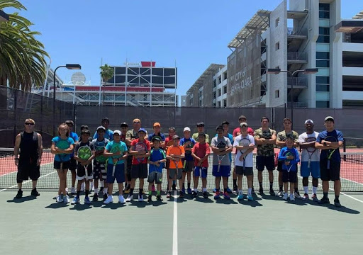
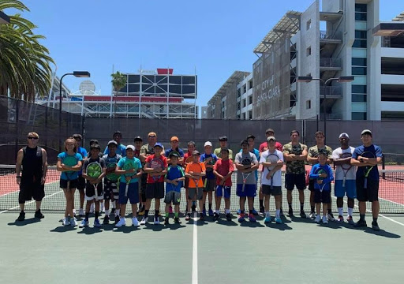

Joshua Oishi
I am currently a student attending the University of Riverside, California, and am a First Year Pre-Business major. Embarrassingly to say, I do not have any work experience. However, I personally believe that I have a strong work ethic, and that I use my time wisely. In Highschool, I admit, I struggled with procrastination, and laziness. However, over this past year that we’ve been in quarantine, it’s given me a lot of time to reflect on my shortcomings, and I believe that I have changed and improved myself as a human being, and have developed a strong work ethic, a healthy schedule that I follow and keep daily, and better communication skills. Despite my lack of work experience, I believe myself to be a capable employee willing to work harder to compensate for my lack of experience, and I am currently learning accounting outside of school to get ahead, seeing it as a possible future career.
I would consider my greatest weakness to be organizational skills, and throughout my life, I’ve always lost things and have struggled to keep things organized, but it’s something that I’ve been working on to improve in these recent times, I think that I’ve been improving my organizational skills. My work ethic is what I consider my greatest strength. I never really considered myself a hardworking person until the start of Fall Quarter, realizing that going into University, that something had to change. Since then, I’ve been working hard and got a strong GPA for my first quarter, and plan to continue to work hard in the future going forward, and I think that i’m continuously improving.
While I do not have any professional or working experience, I have done a number of charity events with my church. Every year, save for this year due to COVID-19, My Church and I go down to Mexicali with the Salvation Army to provide Christmas gifts for the less fortunate children there, being their “Santas”. I have also done a mission trip in Baja, Mexico where we built a home for a family of 7 from an empty lot to provide them with a more comfortable living space. I have a passion for helping others in need, and these trips to assist have become a part of who I am.
I am currently working through my prerequisites to transfer into business school at the University of Riverside California, and have a highschool diploma. I also took part in a club named MOVE at my high school, which connected with the organization World Vision in order to provide assistance and support for the less fortunate and those in need, where we often rose money in order to assist urgent causes such as raising money to help those affected by fires in Ventura, California in 2017. I was also a leading figure on my high school tennis team, where I developed communication skills playing doubles and assisted more inexperienced players in improving as many on our team were very inexperienced, and me and other members would help teach them.
Experience
Participated in Move Club in High School
• Community Service
• World Vision
• Raising Money for Ventura Fires
Tennis Coach
• Teaching kids how to play Tennis
• Whittier College Sports Camp
Volunteer With the Salvation Army
• Goes down to Mexicali Every year to deliver gifts
• Harvest Community Church of Irvine
Education
UC Riverside
Glen A. Wilson High School
University of California Riverside
Portfolio




